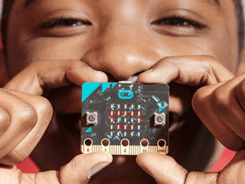

Imaginad un grupo de alumnos que toma apuntes en clase, anotando todo lo que un profesor dice.
Este profesor, a menos que le indiquen lo contrario, no se detiene y asume que sus palabras llegan correctamente a todos los estudiantes.
Si hay algún despistado, siempre puede preguntar al de al lado ("oye, ¿qué acaba de decir?") sin interrumpir la clase.
Leer más…
Comentarios

No os engañéis, todos, del primero al último, estamos aquí por el dinero, y el que diga lo contrario está muy equivocado.
Leer más…
Comentarios
Tal como comentamos el pasado artículo Publicación estática el uso de sitios estáticos es cada vez más habitual por seguridad o por su eficiencia tal como comentaba Ersiko en ese mismo artículo, por otro lado tenemos a Amazon como proveedor y líder indiscutible en servicios de computación y en este artículo los vamos a unir.
Leer más…
Comentarios

Que el fenómeno Internet of Things (también conocido en su forma abreviada como IoT) está de moda es más que un hecho, este nuevo concepto está aquí para quedarse, y por bastante tiempo.
Pensaréis, ¿y todo esto, a qué viene?, pues esta semana se celebra el EuroPython, que por segundo año consecutivo se emplaza en Bilbao (bonita ciudad donde las haya, y que recomiendo visitar si no lo habéis hecho aún), y en esta edición, además de entregar la bolsa de bienvenida de rigor, han regalado una BBC micro:bit, no sin antes haberla dado a conocer en varias charlas, que pronto estarán disponibles en vídeo.
Leer más…
Comentarios
Muy probablemente, muchos de vosotros ya sabréis lo que es un sitio estático.
Seguramente, también tendréis o trabajaréis con alguno.
Hay muchas suites para hacerlos, y muchas formas de desplegarlos automáticamente.
Leer más…
Comentarios